git分支
git分支的功能，可以实现文件按不同意向开发的功能，这样可以实现多人并行开发项目，也可以让个人管理文件的不同并行版本。
查看、创建及切换分支
1、使用如下命令，可以查看当前分支列表，以及当前处在哪个分支上
git branch
当前显示，只有一个分支master，master前面的星号表示当前处在master分支上，master是git接管文件夹时，默认创建的分支，也叫作主分支，每次用git init命令初始化时，都会默认创建一个且只有一个master分支。
2、使用如下命令，可以创建一个分支
git branch <分支名>
3、使用如下命名，可以切换分支
git checkout <分支名>
此时，切换到分支dev上
4、创建加切换分支，可以一起完成，使用如下命令：
git checkout -b <name>
5、在不同分支上有什么区别呢？此时，我们在dev分支上，首先修改code.txt，在它的文字上增加一行，然后再新创建一个文件code2.txt，接着将所有的修改提交到版本库。 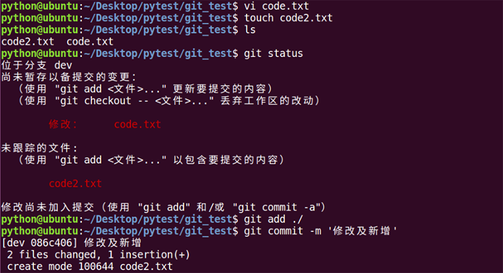 此时，切换不同的分支，查看文件个数及内容，发现，在dev分支上做的任何修改(新增文件及修改文件内容)，在master分支上看不到，也就是说，分支上的修改是独立互不影响的。 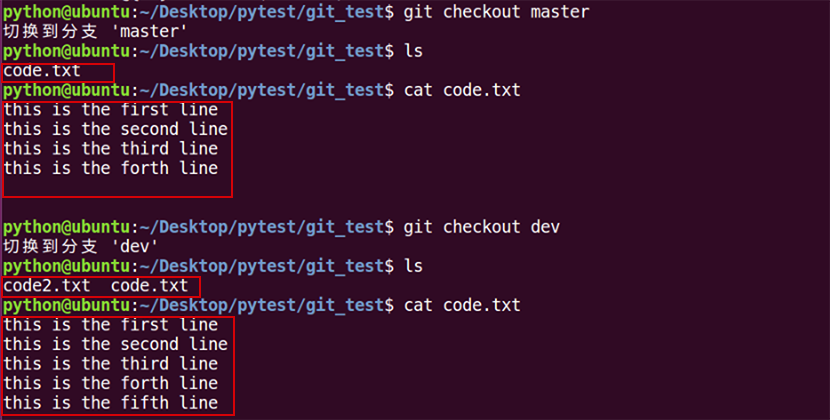
以上操作的分支示意图如下：
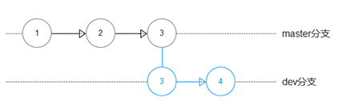
合并及删除分支
1、有时候，需要把分支上的工作合并到另外一个分支上，就要用到分支合并，我们可以用如下命令完成分支合并：
git merge <分支名称>
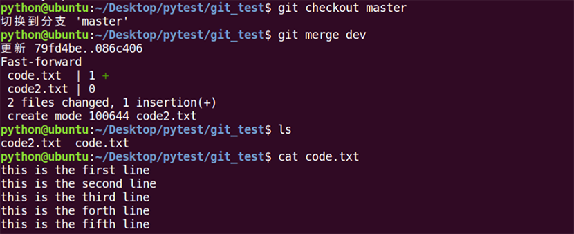 此时，在master分支上，也可以看到dev分支上的修改
2、分支合并完成后，可以删掉无用的分支，可以用如下的命令删除分支：
git branch -d <分支名称>
删除完成后，此时只剩下一个master分支了。
以上操作的分支示意图如下：
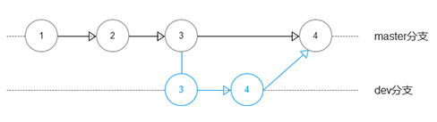
解决冲突
不同的分支上，同一文件如果都更新了版本，在合并时就会产生冲突，这个时候需要手动解决冲突。
1、创建一个分支dev，在此分支下，给code.txt增加一行文字，然后切换到master分支，同样在code.txt上增加一行文字。此时如果在master上合并dev，就会出现冲突：
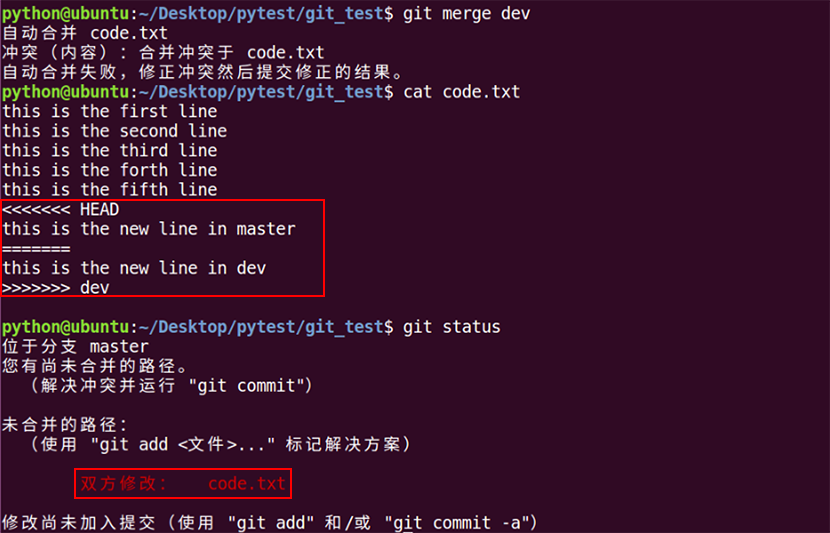
git用<<<<<<<，=======，>>>>>>>标记出不同分支中冲突的内容，我们修改如下后保存
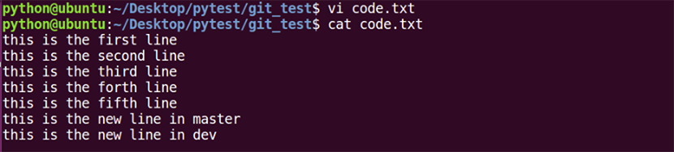
保存完后提交到暂存区和仓库区，完成最终的合并
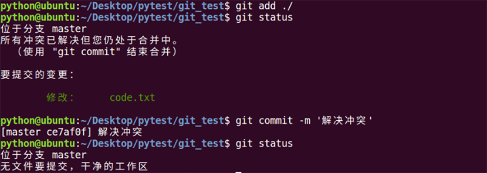
以上操作的分支示意图如下：
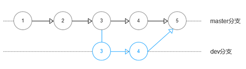
分支合并策略
通常，分支合并时，git会尽量才用fast forward模式，也就是“快进方式”，但不是所有合并都会采用这种模式，下面的场景就不会采用fast forward方式：
1、切换到dev分支下，新建一个code3.txt，然后提交到仓库区，接着切回到master分支下，修改code.txt，新增一行文字，也提交到仓库区，此时，在master分支上合并dev分支，git不会直接按照移动指针的方式来完成合并，此时会出现如下界面：
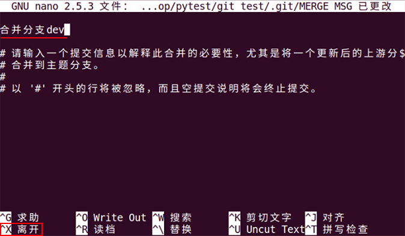
编辑提交信息，按下ctrl+x,然后按y回车退出，这个时候就完成了合并，可以看到文字提示显示的不是fast forward方式合并。
2、fast forward合并会丢掉分支信息，在合并时可以禁止使用这个模式，这个时候可以保留分支信息，即使删除了分支：
切换到dev，在code.txt上增加一行文字，然后提交到仓库区，接着切换到master分支，合并dev分支，此时用的是fast forward模式：
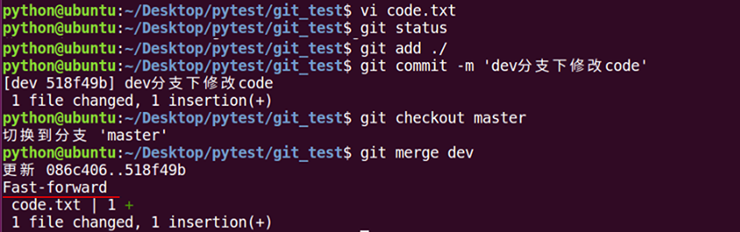
再切换到dev，在code.txt上再增加一行文字，然后提交到仓库区，接着切换到master分支，使用带参数“no-ff”的方式合并dev，“-m”参数可以增加提交信息，此时就可以禁止使用fast forward模式：
git merge --no-ff -m '提交记录说明' <分支名称>
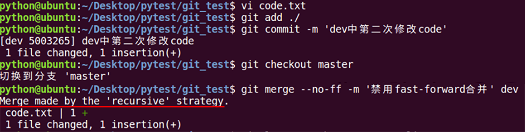 此时可以使用带图形的方式查看版本，使用命令如下：
git log --graph --pretty=oneline
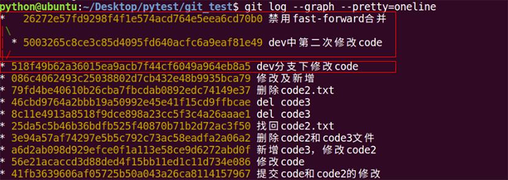
从图中可以看出，使用fast forward合并的，会丢掉分支记录，而禁用fast forward合并的，会保存分支记录并且多一次提交。
bug分支
软件开发中，修复bug是非常常规的工作，在Git中，由于分支是如此的强大，所以，每个bug都可以通过一个新的临时分支来修复，修复后，合并分支，然后将临时分支删除。
如果这个时候，你的工作只做了一半，还不能提交，但是需要马上创建一个bug分支来修改bug，这个时候，可以使用git的stash命令，将工作区暂存起来，工作区就恢复干净了。
1、在dev分支下，将code.txt新增加一行，代表只做了一半的工作，此时需要创建新的bug分支，可以使用git stash命令，将工作区暂存起来，然后执行查看状态命令，发现工作区干净了，也就是工作区回到上此commit的状态： 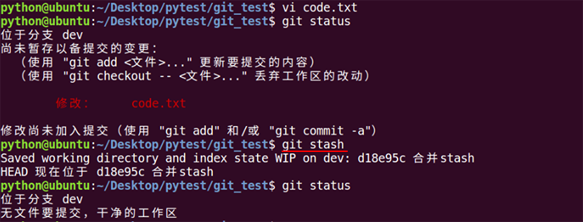 2、创建新分支bug-001，切换到此分支，开始修改bug，假设bug来源于code2.txt，在code2.txt上新增一行文字，bug修复成功，将此修复提交到仓库区： 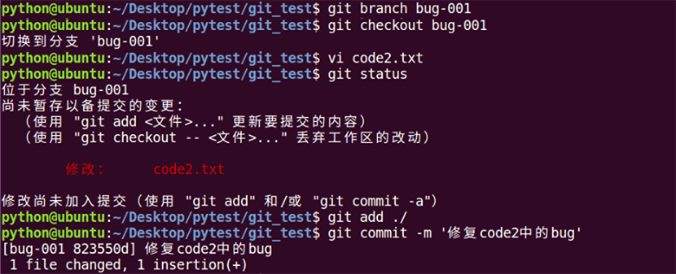 3、切换回dev分支，将bug-001分支合并到dev分支，然后删除bug-001分支： 4、使用git stash list 查看stash状态，使用git stash pop可以将暂存在工作区的工作拿出出来，继续原来的工作。 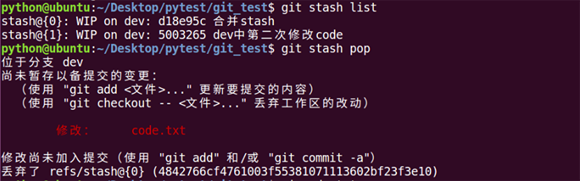